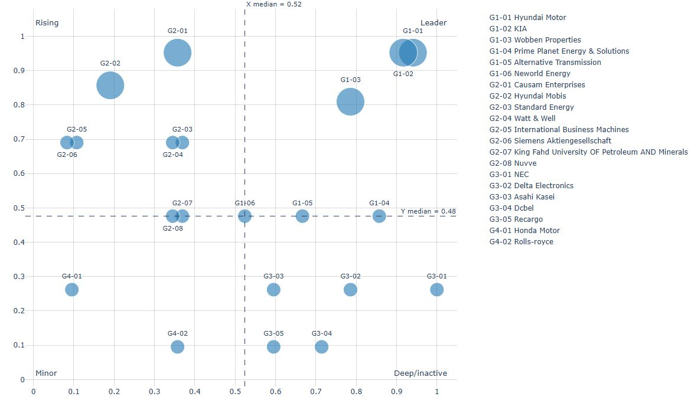

V2G - 出願人分析
V2G（Vehicle-to-Grid、車両–電力網双方向連携）は、技術実証段階から商用市場への移行期に入っており、鍵となるのは地域に分散したEVバッテリーをアグリゲーションによってディスパッチ可能な容量へと統合し、特定時間帯に充放電を協調させることである。これにより、電力系統の安定性とユーザー体験の両立が図られる。直近5年間のデータを集計した結果、本領域では合計31件の特許、21社の出願人が参加しており、加重アクティブ度は総計96となった。四象限評価によれば、G1象限の上位3社は Hyundai Motor Company、Kia Corporation、および Wobben Properties GmbH であり、自動車メーカーとエネルギー技術保有者が並行して布陣している傾向が顕著である。その他出願人の分布は以下の「出願人分析図」に示す。
Hyundai Motor Company：診断・保護・運用の三本柱
Hyundai の特許動向は主に三領域に収れんしている。第一に、US20250196708A1 は充電コントローラによってバッテリ状態を取得および検証し、それに基づいて放電売電または受電充電を決定する。第二に、US20250062620A1 では車載充電器(OBC)内に二つのリレーを配置し、V2G保護が発動した際に協調的に遮断することで応答性と順序性を確保する。第三に、US20230382262A1 はサーバーが時間別電力量料金および車両状態に基づいて充放電をスケジューリングし、目標 SoC を維持しながら収益性を向上させる構成を提案している。
産業面での動向も特許指向と一致している。一方では済州道と連携し、グリーン水素、分散型エネルギー、商用V2Gの取り組みを推進し、再生可能エネルギーとEVが双方向に連携する実証エコシステムを構築している（ The Korea Times； MK Business）。他方では Hyundai と Kia が共同で WeaveGrid に投資し、コネクテッドカーのデータを活用した充放電ディスパッチおよび需要応答の高度化を図り、双方向サービスのクラウド管理能力を強化している（ WeaveGrid プレスリリース）。欧州では、オランダの We Drive Solar と協業し、IONIQ 5 を用いた双方向カーシェア車隊を構築して「双方向都市」実験を展開し、時間別電力量料金下での放電収益およびコミュニティ蓄電の有効性を検証している（ Hyundai Europe）。さらに、学術調査では IONIQ 5 が 11kW 充電／5kW 放電の双方向OBCを実装し、長期実測が完了したと報告されており、車両側の診断・リレー協調遮断・併網制御の重要性が裏付けられている（ IEEE Power & Energy Magazine PDF）。
Kia Corporation：共同開発とクラウド主導の商用化推進
Kia の特許は全て Hyundai との共同出願であり、両社が車載ハードウェアからクラウド排程まで一体型のV2G戦略を採っていることが明確である。産業面では、両社は2025年1月に米国の電力系統統合ソフトウェア企業 WeaveGrid へ共同投資を実施した。同社プラットフォームはスマート充電・負荷管理・電力網連携制御（V2Gおよび需要応答を含む）を特徴としており、電力量料金、電力需要、残量に応じた動的放電制御を可能とする。この投資は、既存V2G研究の補完および北米・欧州・アジアの市場規制開放後を見据えた商用能力強化を狙うものである（ PR Newswire； The EV Report）。
Wobben Properties GmbH：可用性と電力協調を軸とした車隊制御
Wobben の3件の米国特許は、車隊レベルでの可用性管理と電力協調に焦点を当てている。US12252028B2 は車両の到着／離脱予測に基づき総電力量の時系列を構築し、電力交換計画に活用する。US12311797B2 はエネルギー設定および電力上限に応じて交換電力曲線を形成し、各車のSoCおよび個別出力制約に沿って部分電力を配分する。US12311799B2 は総SoC許容範囲および到着時刻予測を用い、確率補正により提供期間中の充放電制御を動的に行い、系統サービスの安定性と蓄電可用性を向上させる。
結語
出願上位三者を俯瞰すると、Hyundai と Kia は車載保護機構およびクラウド運用戦略の両面からアプローチし、Wobben はアグリゲーションと可用性保証の視点から切り込んでいる。三者の技術スタンスは相補的である。双方向計量、標準化プロトコル、市場制度が整備されるにつれ、V2Gは実証段階からスケール拡大へ移行し、車両・駐車場・コミュニティが需要側に近い重要蓄電ノードとなり、都市レベルの電力レジリエンスに新たな可能性をもたらすだろう。